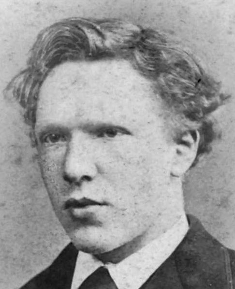

La famille
La famille Van Gogh, d'ancienne bourgeoisie, est déjà notable aux xvie et xviie siècles. L'état de pasteur est une tradition familialeWM 1, de même que le commerce de l'art. Le grand-père de Vincent (1789-1874) a, par exemple, suivi des cours à la faculté de théologie à l'université de Leyde jusqu'en 1811. Trois de ses fils sont devenus marchands d'art. Vincent Willem van Gogh (prononcé en néerlandais : /ˈvɪnsɛnt ˈʋɪləm vɑŋ ˈɣɔx/) naît le 30 mars 1853 à Groot-Zundert, un village près de Bréda dans l'ouest du Brabant-Septentrional, dans le sud des Pays-Bas. Sa mère avait mis au monde un enfant mort-né, le 30 mars 1852 : Vincent Willem I, dont il portera le prénom. Il est le fils aîné de Theodorus van Gogh, pasteur de l'Église réformée néerlandaise à Groot-Zundert depuis 1849, et d'Anna Cornelia, née Carbentus, fille d'un relieur de la cour du Duché de Brabant. Ses parents élèveront six enfants : Vincent, Anna Cornelia (1855-1930), Théodore (« Théo »), Elisabetha Huberta (« Liss », 1859-1936), Willemina Jacoba (« Wil » ou « Wilkie », 1862-1941) et Cornelis Vincent (« Cor », 1867-1900)WM 2. Son père Theodorus compte dix frères et sœurs. Plusieurs oncles paternels joueront un rôle déterminant dans la vie de Vincent. Hendrik Vincent van Gogh, « Hein », est marchand d'art à Bruxelles. Johannes van Gogh (de), « Jan », est amiral et reçoit Vincent chez lui à Amsterdam pendant plus d'un an. Cornelis Marinus van Gogh, « Cor », est également marchand d'art. Son parrain Vincent van Gogh, « Cent », s'est associé à la chaîne de galeries de l'éditeur d'art parisien Goupil & Cie3.Vincent Van Gogh |
|
 |
|
| Naissance | 30 mars 1853 Groot Zundert, Pays-Bas |
| Décès | 29 juillet 1890 (à 37 ans) Auvers-sur-Oise, France |
| Nom de naissance | Vincent Willem van Gogh |
| Nationalité | |
| Activité | Peintre |
| Oeuvres Principales |
|
La jeunesse
1853-1869
La famille de Van Gogh mène une vie simple. L'ambiance laborieuse du foyer parental marque profondément le jeune Vincent, qui est un enfant sérieux, silencieux et pensifM 1. En janvier 1861, Vincent Van Gogh entre à l'école de Zundert, dont l'effectif est de deux cents élèves4. Il est retiré de l'école et, à la fin d'année 1861, Anna Birnie (1844-1917)5 est embauchée comme gouvernante pour donner des cours à Vincent et à sa sœur, Anna. Elle leur enseigne, entre autres, le dessin. Le 1er octobre 1864, il part pour l'internat de Jan Provily à Zevenbergen, une ville rattachée à la commune de Moerdijk à trente kilomètres de chez lui. Il y apprend le français, l'anglais et l'allemand. Il y réalise aussi ses premiers essais de dessinWM 3. Le 15 septembre 1866, il entre au collège Guillaume II, à Tilbourg.  Son professeur de dessin était le peintre Constant Cornelis Huijsmans au collège Willem II (en)6. Vincent vit difficilement cet éloignement. En mars 1868, il quitte précipitamment l'établissement et retourne chez ses parents à Zundert.1869-1878
Vincent van Gogh à l'âge de 18 ansLe 30 juillet 1869, à l'âge de 16 ans, Vincent quitte la maison familiale pour devenir apprenti chez Goupil & Cie à La Haye, filiale fondée par son oncle Hein9. Cette firme internationale qui vend des tableaux, des dessins et des reproductions, est alors dirigée par Hermanus TersteegJLB 1, pour qui l'artiste avait un grand respect. En 1871, son père est muté à Helvoirt. Vincent y passe ses vacances en 1872, avant de rendre visite à Theo, à Bruxelles. Après sa formation en apprentissage, il est engagé chez Goupil & Cie. En juin 1873, Adolphe Goupil l'envoie dans la succursale de Londres avec l'accord de son oncle Cent. Selon la future femme de Theo, Johanna Bonger dite « Jo », c'est la période la plus heureuse de sa vie10. Il réussit et, à 20 ans, il gagne plus que son père. Il tombe amoureux d'Eugénie LoyerDiff 1, la fille de sa logeuse à Brixton, mais lorsqu'il lui révèle ses sentiments, elle lui avoue qu'elle s'est déjà secrètement fiancée avec le locataire précédentZ 1. Van Gogh s'isole de plus en plus. À la même époque, il développe un fervent intérêt pour la religion. Son zèle religieux prend des proportions qui inquiètent sa famille. Le 12 novembre 1873, Theo est muté à la succursale de La Haye par son oncle Cent. Son père et son oncle envoient Vincent à Paris à la mi-mai 1875, au siège principal de Goupil & Cie au 9 rue Chaptal. Choqué de voir l'art traité comme un produit et une marchandise, il en parle à certains clients, ce qui provoque son licenciement le 1er avril 187611,Z 2. Entre-temps, la famille Van Gogh a déménagé à Etten, village du Brabant-Septentrional. Van Gogh se sent alors une vocation spirituelle et religieuse. Il retourne en Angleterre où, pendant quelque temps, il travaille bénévolement, d'abord comme professeur suppléant dans un petit internat donnant sur le port de Ramsgate, où il est engagé. Il dessine quelques croquis de la ville. À son frère Theo, il écritNote 4,M 2 : « À Londres, je me suis souvent arrêté pour dessiner sur les rives de la Tamise en revenant de Southampton Street le soir, et cela n'aboutissait à rien ; il aurait fallu que quelqu'un m'explique la perspective. » Comme l'école doit par la suite déménager à Isleworth dans le MiddlesexNote 5, Van Gogh décide de s'y rendre. Mais le déménagement n'a finalement pas lieu. Il reste sur place, devient un fervent animateur méthodiste et veut « prêcher l'Évangile partout ». À la fin d'octobre 1876, il prononce son premier sermon à la Wesleyan Methodist Church à Richmond. En novembre, il est engagé comme assistant à la Congregational Church de Turnham GreenJLB 2. À Noël 1876, il retourne chez ses parents. Sa famille l'incite alors à travailler dans une librairie de Dordrecht aux Pays-Bas pendant quelques mois. Toutefois, il n'y est pas heureux. Il passe la majeure partie de son temps dans l'arrière-boutique du magasin à dessiner ou à traduire des passages de la Bible en anglais, en français et en allemand. Ses lettres comportent de plus en plus de textes religieux. Son compagnon de chambre de l'époque, un jeune professeur appelé Görlitz, expliquera plus tard que Van Gogh se nourrit avec parcimonie12 : « Il ne mangeait pas de viande, juste un petit morceau le dimanche, et seulement après que notre propriétaire eut longuement insisté. Quatre pommes de terre avec un soupçon de sauce et une bouchée de légumes constituaient son dîner. » Le soutenant dans son désir de devenir pasteur, sa famille l'envoie en mai 1877 à Amsterdam, où il séjourne chez son oncle Jan, qui est amiral. Vincent se prépare pour l'université et étudie la théologie avec son oncle Johannes Stricker, théologien respectéNote 6. Il échoue à ses examens. Il quitte alors le domicile de son oncle Jan, en juillet 1878, pour retourner à la maison familiale à Etten. Il suit des cours pendant trois mois à l'école protestante de Laeken, près de Bruxelles, mais il échoue à nouveau et abandonne ses études pour devenir prédicateur laïc. Au début de décembre 1878, il obtient une mission d'évangéliste en Belgique, auprès des mineurs de charbon du Borinage, dans la région de Mons. Il y devient un prédicateur solidaire des luttes contre le patronat mais il a déjà fait son apprentissage pictural en ayant visité tous les grands musées des villes importantes qu'il a traversées quand il travaillait chez Goupil & Cie13.
Pfi Jacob Lebel-Frenette